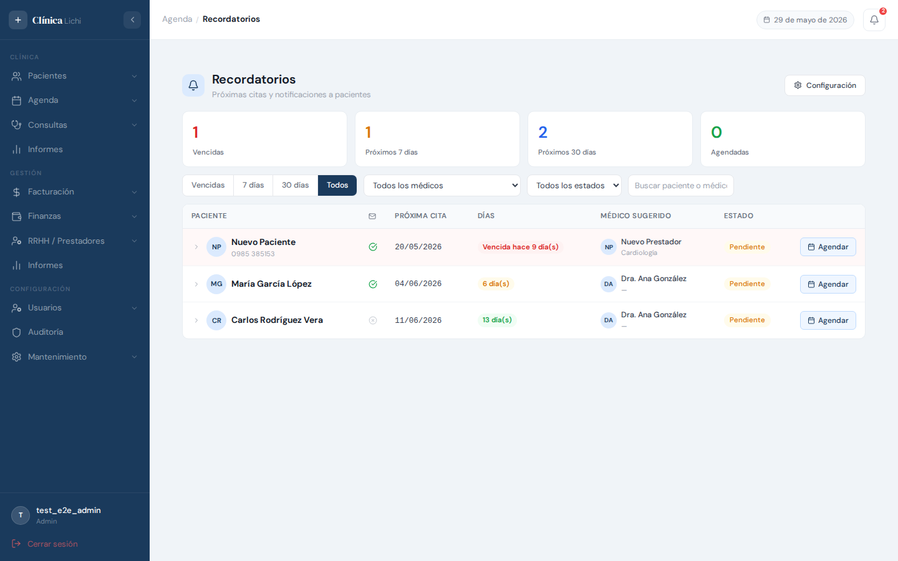
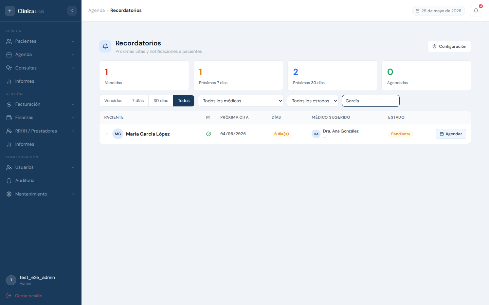
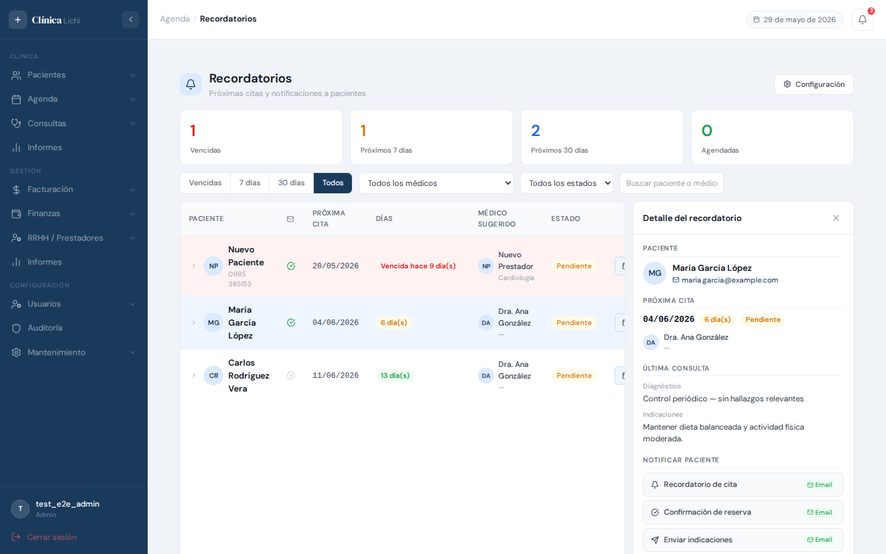
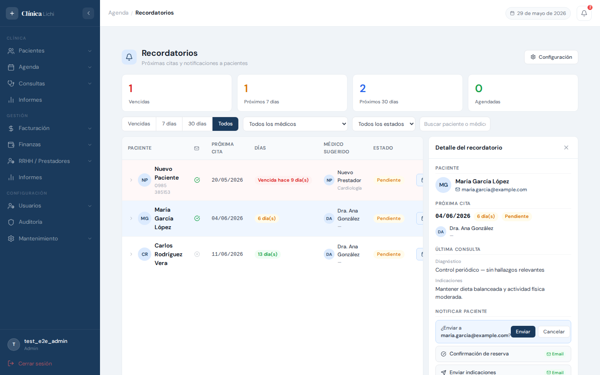
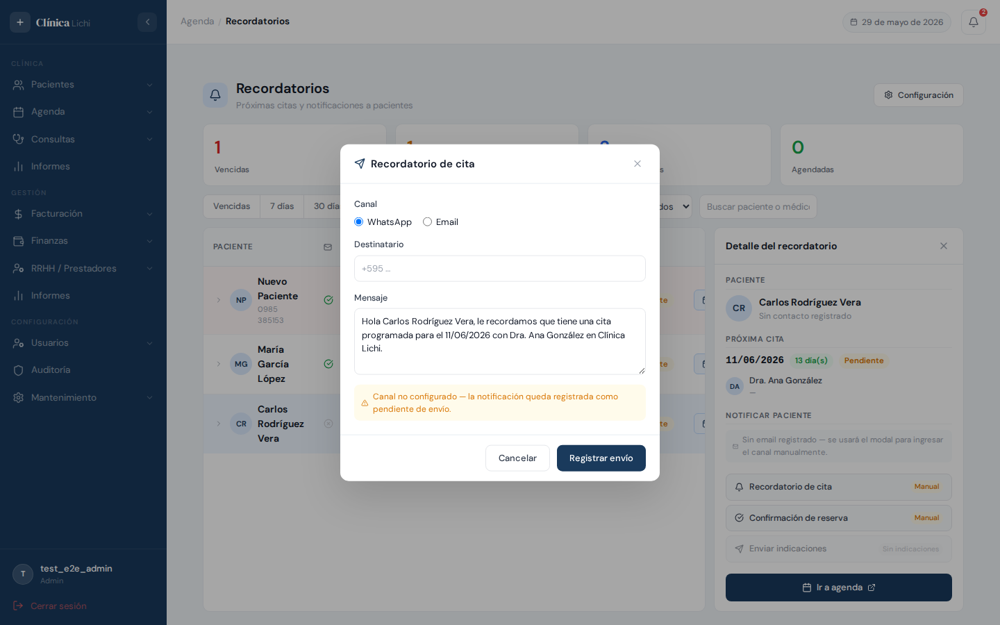
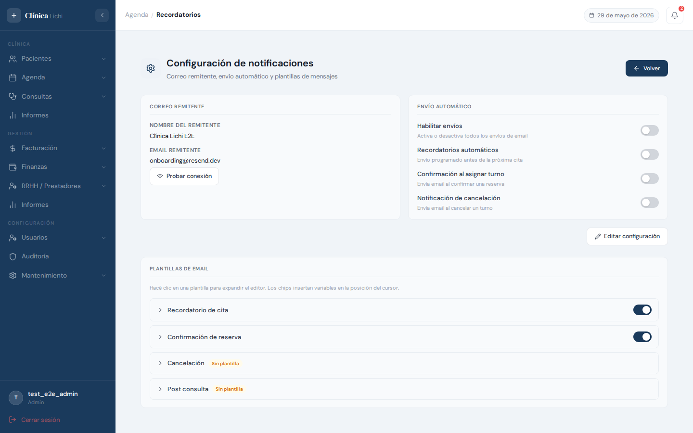
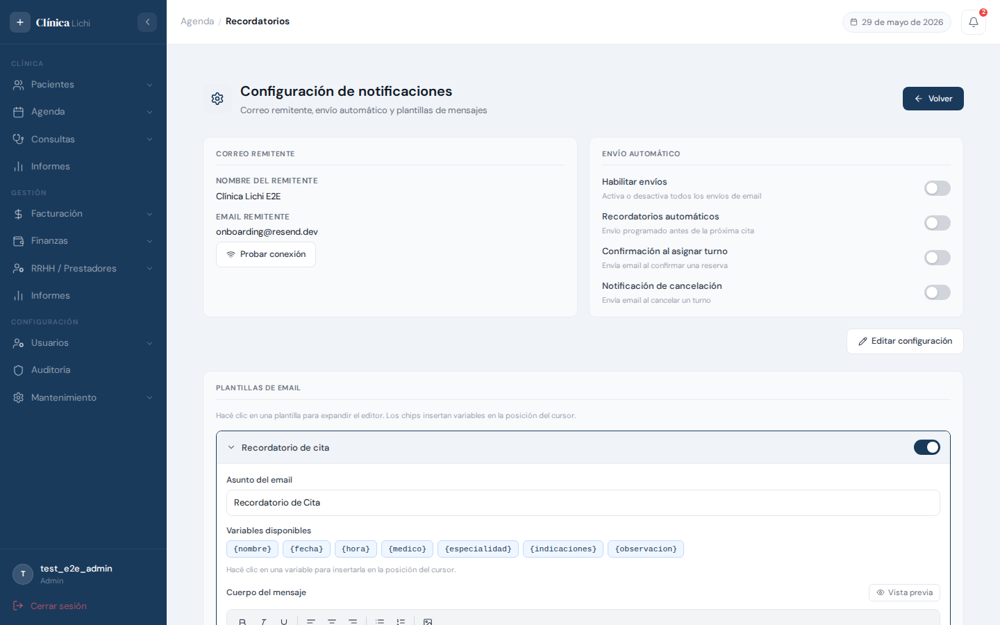
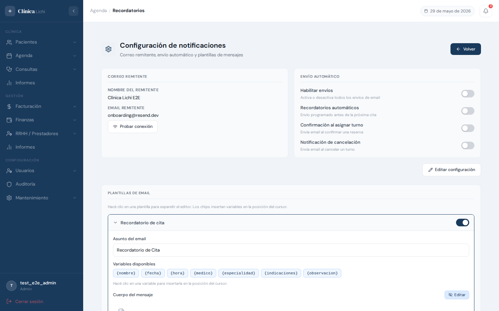

Descripción del módulo
El módulo Recordatorios centraliza el seguimiento de pacientes que tienen una próxima cita registrada en el sistema. Desde aquí se puede enviar notificaciones por email directamente al paciente, ver el historial de comunicaciones anteriores y gestionar las plantillas de mensajes.
El módulo tiene dos secciones: la pantalla principal (listado de próximas citas y panel de notificación) y la pantalla de configuración (acceso exclusivo para administradores), donde se definen el remitente, los envíos automáticos y las plantillas de email.
Permisos por rol
| Acción | Administrador | Recepcionista | Médico | Secretaria médico |
|---|---|---|---|---|
| Ver listado de próximas citas | ✅ | ✅ | ✅ | ✅ |
| Ver panel de detalle del paciente | ✅ | ✅ | ✅ | ✅ |
| Enviar notificación (email / manual) | ✅ | ✅ | ✅ | ✅ |
| Reenviar notificación fallida | ✅ | ✅ | — | — |
| Ver historial de notificaciones | ✅ | ✅ | ✅ | ✅ |
| Acceder a Configuración | ✅ | — | — | — |
| Editar configuración de envío | ✅ | — | — | — |
| Crear / editar / eliminar plantillas | ✅ | — | — | — |
Acceder al módulo
El módulo de Recordatorios está disponible en el menú lateral bajo el grupo Agenda.
- Iniciá sesión en el sistema con tu usuario y contraseña.
- En el menú lateral izquierdo, hacé clic en Agenda para expandir el grupo.
- Seleccioná Recordatorios dentro del grupo.
- La pantalla principal carga automáticamente con las próximas citas de los próximos 30 días.
Pantalla principal

La pantalla principal tiene tres áreas: las estadísticas en la parte superior, los filtros debajo, y la tabla de próximas citas que ocupa el resto de la pantalla.
Estadísticas
Cuatro indicadores resumen el estado actual de los recordatorios:
| Indicador | Descripción |
|---|---|
| Vencidas | Pacientes cuya próxima cita registrada ya pasó y aún no fue agendada. |
| Próximos 7 días | Citas programadas dentro de la semana siguiente. |
| Próximos 30 días | Citas programadas en el mes siguiente. |
| Agendadas | Citas que ya tienen turno reservado en la agenda. |
Tabla de próximas citas
Cada fila representa una consulta finalizada cuyo médico dejó registrada una próxima cita para el paciente. Las columnas son:
| Columna | Contenido |
|---|---|
| Paciente | Nombre completo. Si el paciente tiene email registrado, aparece un ícono verde ✅ en la columna siguiente; si no, un ícono gris. |
| Próxima cita | Fecha de la próxima cita en formato DD/MM/AAAA. |
| Días | Cuenta regresiva con color: verde (más de 7 días), naranja (7 días o menos), rojo (vencida). |
| Médico sugerido | Médico que atendió la última consulta y recomendó la cita. |
| Estado | Agendado si ya tiene turno en agenda, Pendiente si aún no. |
| Botón derecho | Agendar (si pendiente) o Ver (si agendado) — ambos navegan a la agenda del médico en la fecha correspondiente. |
Flecha de historial inline
El ícono › a la izquierda de cada fila expande una vista rápida con el historial de notificaciones enviadas a ese paciente, sin necesidad de abrir el panel completo. Hacé clic en › nuevamente para contraer.
Filtrar recordatorios
La barra de filtros tiene cuatro controles que se pueden combinar entre sí:
Tabs de período
| Tab | Muestra |
|---|---|
| Vencidas | Solo citas cuya fecha ya pasó. |
| 7 días | Citas dentro de la semana siguiente (desde hoy). |
| 30 días | Citas dentro del mes siguiente. Valor por defecto al entrar. |
| Todos | Todas las próximas citas sin límite de fecha. |
Filtro por médico
El selector Todos los médicos permite mostrar solo los pacientes del médico seleccionado.
Filtro por estado
El selector Todos los estados filtra entre Pendiente (sin turno asignado) y Agendado (turno reservado).
Búsqueda por nombre
El campo de texto filtra la tabla en tiempo real por nombre del paciente o del médico sugerido. Se limpia borrando el texto del campo.

Ver detalle del recordatorio
Haciendo clic en cualquier fila de la tabla se abre el panel de detalle lateral con toda la información del paciente y las acciones de notificación disponibles.

Contenido del panel
| Sección | Información mostrada |
|---|---|
| Paciente | Nombre completo, teléfono (link tel:) y email (link mailto:). Si no tiene datos de contacto, muestra "Sin contacto registrado". |
| Próxima cita | Fecha, badge de urgencia (urgente / normal / vencida) y badge de estado (Agendado / Pendiente). Debajo, el médico sugerido con su especialidad. |
| Última consulta | Diagnóstico e indicaciones del médico. Solo aparece si la consulta tenía esos campos completados. |
| Últimas consultas | Las 3 consultas previas más recientes del paciente (excluyendo la actual), con fecha y diagnóstico. |
| Notificar paciente | Botones para enviar los distintos tipos de notificación. |
| Historial de notificaciones | Últimas 5 notificaciones enviadas al paciente. Solo aparece si hay alguna registrada. |
Cerrar el panel
El panel se cierra de tres maneras: haciendo clic en la X del encabezado, haciendo clic nuevamente en la misma fila de la tabla, o haciendo clic en otra fila (que abre el detalle de ese nuevo registro).
Ir a agenda
El botón azul Ir a agenda al final del panel navega directamente a la página de Agenda con el médico y la fecha de la próxima cita preseleccionados, facilitando la reserva del turno.
Enviar notificación al paciente
Desde el panel de detalle, la sección Notificar paciente ofrece tres tipos de notificación:
| Tipo | Cuándo usarlo |
|---|---|
| Recordatorio de cita | Avisar al paciente que tiene una cita próxima. Usa la plantilla tipo recordatorio. |
| Confirmación de reserva | Confirmar que el turno fue reservado. Usa la plantilla tipo confirmacion. |
| Enviar indicaciones | Enviar las indicaciones post-consulta. Solo habilitado si la consulta tiene indicaciones registradas. Usa la plantilla tipo post_consulta. |

Paciente con email registrado
Si el paciente tiene email en su ficha, los botones muestran el badge ✉ Email. Al hacer clic en un botón, aparece una confirmación inline en la misma fila:
- Se muestra el mensaje "¿Enviar a [email del paciente]?" con dos botones: Enviar y Cancelar.
- Hacé clic en Enviar para confirmar. El sistema llama al servicio de email (Resend) usando la plantilla correspondiente al tipo seleccionado.
- Un toast de confirmación indica si el email se envió correctamente o si hubo un problema.
- La notificación queda registrada en el historial del paciente, con estado enviado o fallido.

Paciente sin email registrado
Si el paciente no tiene email, los botones muestran el badge Manual. Al hacer clic se abre un modal donde podés:
- Elegir el canal: WhatsApp o Email.
- Ingresar el destinatario (número de teléfono o email).
- Revisar o modificar el mensaje pre-completado con los datos del paciente.
- Hacer clic en Registrar envío. La notificación queda guardada como pendiente de envío real — el sistema no envía WhatsApp automáticamente, solo deja el registro.
Configuración de notificaciones
Para acceder, hacé clic en el botón Configuración (ícono de engranaje) en la parte superior derecha de la pantalla de Recordatorios. Para volver, usá el botón ← Volver.
Correo remitente
Define desde qué dirección salen los emails del sistema. Para editarla, hacé clic en el botón Editar configuración en la parte superior derecha.
| Campo | Descripción |
|---|---|
| Nombre del remitente | El nombre que aparece en el cliente de email del destinatario, ej. Clínica Lichi. |
| Email remitente | La dirección desde la que se envían los correos. Debe estar verificada en Resend o usar onboarding@resend.dev para pruebas sin dominio propio. |
El botón Probar conexión envía un email de prueba a la dirección remitente configurada para verificar que el servicio de email funciona correctamente.
Envío automático
Los toggles de la tarjeta derecha controlan qué emails el sistema envía sin intervención manual:
| Toggle | Efecto |
|---|---|
| Habilitar envíos | Interruptor maestro. Si está desactivado, ningún email sale del sistema, independientemente de los demás toggles. |
| Recordatorios automáticos | Envía recordatorios automáticamente antes de la próxima cita. Al activarlo aparece la configuración de horas de anticipación. |
| Primer / Segundo recordatorio | Cantidad de horas antes de la cita en que se envía cada aviso (ej. 24h antes, 2h antes). El segundo recordatorio es opcional. |
| Confirmación al asignar turno | Envía automáticamente un email de confirmación cuando se asigna un paciente a un turno de agenda. |
| Notificación de cancelación | Envía automáticamente un email cuando se cancela un turno. |
Luego de editar los campos de texto (nombre y email remitente), hacé clic en Guardar configuración para confirmar los cambios. Los toggles se guardan automáticamente al cambiarlos, sin necesidad de guardar manualmente.
Plantillas de email con editor visual

La sección Plantillas de email está debajo de las tarjetas de configuración. Hay cuatro tipos de plantilla, una por cada tipo de notificación. Hacé clic en cualquiera para expandirla y editar su contenido.
Editor visual (WYSIWYG)

El cuerpo del mensaje se edita con un editor visual donde lo que ves es lo que recibirá el paciente. No es necesario escribir HTML.
Área de edición — escribí el mensaje aquí.
| Botón | Función |
|---|---|
| B (Negrita) | Pone en negrita el texto seleccionado o activa el modo negrita para lo que se escriba a continuación. |
| I (Cursiva) | Aplica cursiva al texto seleccionado. |
| U (Subrayado) | Subraya el texto seleccionado. |
| Alinear izquierda / centro / derecha | Cambia la alineación del párrafo donde está el cursor. |
| Lista con viñetas / numerada | Crea una lista. Presioná Enter para agregar ítems y Enter dos veces para salir de la lista. |
| 🖼 Imagen | Abre el selector de archivos para subir una imagen al servidor. La imagen queda embebida directamente en el email (adjunta como imagen inline, no como link externo). |
Variables disponibles
Los chips de variables insertan un marcador de posición que el sistema reemplaza con datos reales al enviar el email. Hacé clic en el chip para insertarlo en la posición del cursor en el editor:
{nombre} {fecha} {hora} {medico} {especialidad} {indicaciones} {observacion}
| Variable | Se reemplaza con |
|---|---|
{nombre} | Nombre completo del paciente. |
{fecha} | Fecha de la próxima cita (DD/MM/AAAA). |
{hora} | Hora del turno (HH:MM). |
{medico} | Nombre del médico sugerido. |
{especialidad} | Especialidad principal del médico. |
{indicaciones} | Indicaciones post-consulta del médico. |
{observacion} | Observación del turno de agenda. |
Vista previa
El botón Vista previa (ícono de ojo) alterna entre el editor y una vista renderizada del email con datos de ejemplo. Hacé clic en Editar para volver al editor.

Agregar imágenes
- Posicioná el cursor en el lugar del editor donde querés insertar la imagen.
- Hacé clic en el botón 🖼 Imagen de la barra de herramientas.
- Seleccioná el archivo de imagen desde tu computadora.
- La imagen se sube automáticamente al servidor y queda insertada en el editor.
- Para eliminar una imagen del cuerpo, hacé clic sobre ella en el editor para seleccionarla y presioná la tecla Delete o Backspace.
Activar / desactivar plantilla
El toggle que aparece a la derecha del nombre de la plantilla (cuando está expandida) activa o desactiva esa plantilla. Si está desactivada, el sistema usa el mensaje predeterminado al enviar ese tipo de notificación.
Guardar la plantilla
Hacé clic en el botón Guardar plantilla al final del panel expandido. Si es la primera vez que se crea esa plantilla, el botón dice Crear plantilla.
Historial y reenvío
Cada notificación enviada queda registrada en el sistema con su estado, canal, fecha y tipo. Hay dos lugares donde consultarlo:
Historial inline en la tabla
Hacé clic en el ícono › a la izquierda de cualquier fila para expandir el historial de notificaciones de ese paciente directamente en la tabla, sin abrir el panel lateral.
Historial en el panel de detalle
Al abrir el panel de un paciente, la sección Historial de notificaciones muestra las últimas 5 notificaciones con tipo, canal, estado y fecha.
Estados de una notificación
| Estado | Significado |
|---|---|
| Enviado | El email fue aceptado por el servicio de envío (Resend). Esto no garantiza que el destinatario lo leyó, solo que salió del sistema. |
| Fallido | Hubo un error al intentar enviar (API key incorrecta, email inválido, servicio no disponible, etc.). |
| Pendiente | La notificación fue registrada pero aún no se procesó (canal manual o error temporal). |
Reenviar una notificación fallida
Solo aplica a notificaciones por Email con estado Fallido.
- Abrí el historial inline de la fila (ícono ›) o el historial en el panel de detalle.
- Buscá la notificación con estado Fallido.
- Hacé clic en el botón ↺ (reenviar) que aparece a la derecha de esa entrada.
- El sistema intenta enviar nuevamente. Un toast indica si tuvo éxito.
Mensajes frecuentes y comportamientos esperados
| Mensaje o situación | Explicación y qué hacer |
|---|---|
| "No hay próximas citas en este período." | No hay consultas con próxima cita registrada en el rango seleccionado. Probá cambiar el tab a Todos para ver todos los registros sin límite de fecha. |
| "Sin resultados para la búsqueda." | Ningún paciente o médico coincide con el texto escrito. Borrá el texto del campo de búsqueda para restaurar la lista. |
| "No se pudo enviar el email. La notificación queda pendiente." | El servicio de email (Resend) rechazó el envío. Causas posibles: API key incorrecta, email del paciente inválido, o servicio deshabilitado en Configuración. Revisá la configuración y usá Probar conexión. |
| "RESEND_API_KEY no configurada en el servidor." | El backend no tiene la clave de API de Resend. Un administrador técnico debe configurarla en el archivo de entorno del servidor. |
| "Configure el correo remitente antes de probar la conexión." | El campo Email remitente en Configuración está vacío. Ingresá una dirección válida y guardá antes de probar. |
| El botón Enviar indicaciones aparece deshabilitado | La consulta asociada a esa próxima cita no tiene indicaciones registradas. El médico debe completarlas desde la pantalla de Consultas. |
| El ícono de email en la tabla aparece gris (✗) | El paciente no tiene email registrado en su ficha. Para el envío automático, un recepcionista debe agregar el email desde el módulo Pacientes. |
| El toggle de Recordatorios automáticos está activado pero no llegan emails | Verificá que Habilitar envíos también esté activado. Además, los recordatorios automáticos requieren que el proceso de envío programado (enviar_recordatorios) esté corriendo en el servidor. |
| La plantilla fue guardada pero el email llegó con formato diferente | El email refleja el contenido de la plantilla al momento del envío. Si editaste la plantilla después de que se envió la notificación, las notificaciones anteriores no se actualizan retroactivamente. |
| La imagen en el email no se ve en algunos clientes de correo | Las imágenes se envían embebidas (inline), lo que es compatible con Gmail y Outlook. Si no se ven, es posible que el cliente de correo del destinatario tenga bloqueadas las imágenes por defecto — el destinatario puede habilitarlas manualmente. |
- Entrá a Configuración y completá el email remitente con la dirección verificada en Resend.
- Activá el toggle Habilitar envíos.
- Usá el botón Probar conexión para confirmar que el email llega.
- Creá las plantillas de Recordatorio y Confirmación usando el editor visual.
- Volvé al listado y enviá la primera notificación desde el panel de detalle de un paciente.